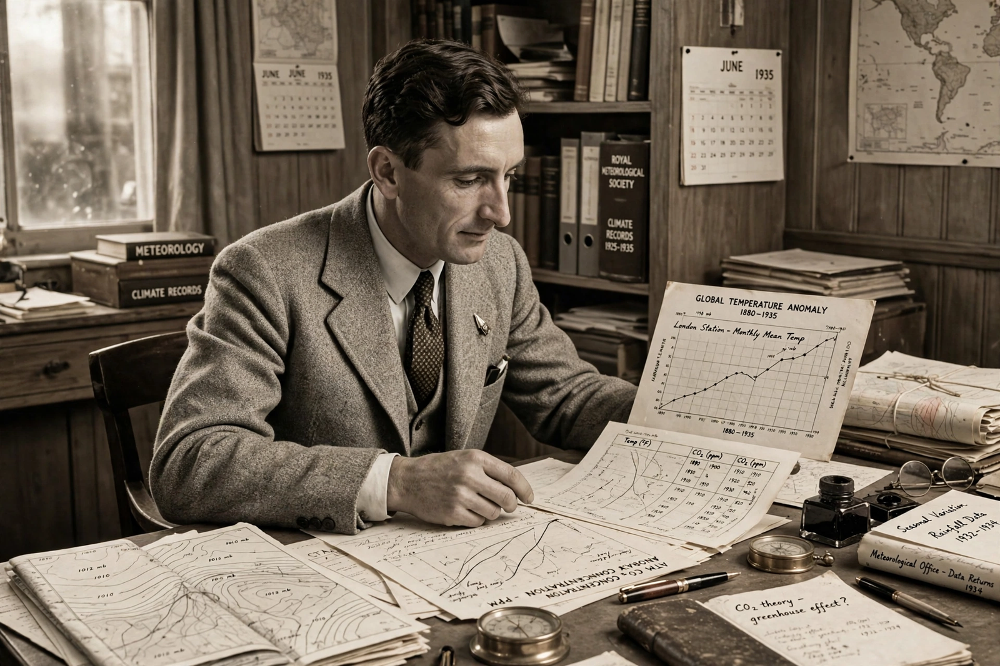

Guy Stewart Callendar

Guy Stewart Callendar (1898–1964) was an English steam engineer and amateur meteorologist who in 1938 assembled the evidence that carbon dioxide concentrations were rising and that the world was warming as a result — an early, largely overlooked statement of the {L('Greenhouse_effect')} theory of {L('Global_warming')}.
The link between CO₂ and recent warming is sometimes called the 'Callendar effect' in his honour.
The 1938 paper
In his spare time Callendar painstakingly compiled 19th-century chemical measurements of atmospheric CO₂, discarding the unreliable ones, and global temperature records from some 200 stations. He concluded that CO₂ had risen by roughly 6 per cent since 1900 (later work suggests about 10 per cent by then) and that this could explain much of the observed warming of about half a degree since the late 19th century.
His paper in the Quarterly Journal of the Royal Meteorological Society was met with scepticism — the consensus held that the oceans would absorb any excess CO₂ and that water vapour swamped its effect. Callendar, an outsider without institutional position, kept refining his estimates until his death, and was vindicated only as later science, especially the {L('Keeling_Curve')}, caught up with him.
See also: Greenhouse effect · Keeling Curve · John Tyndall · Svante Arrhenius · Global warming